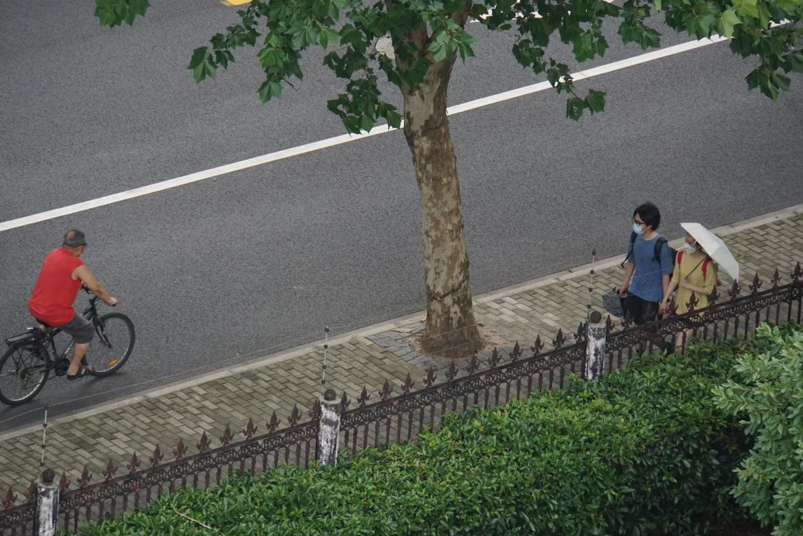
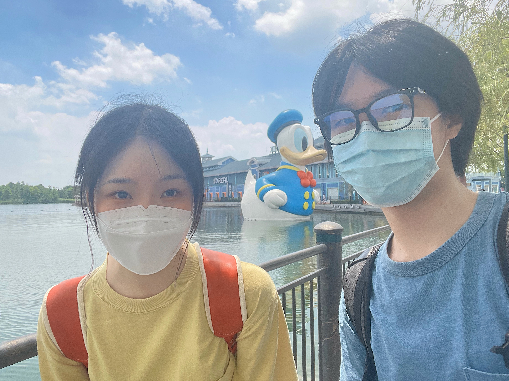
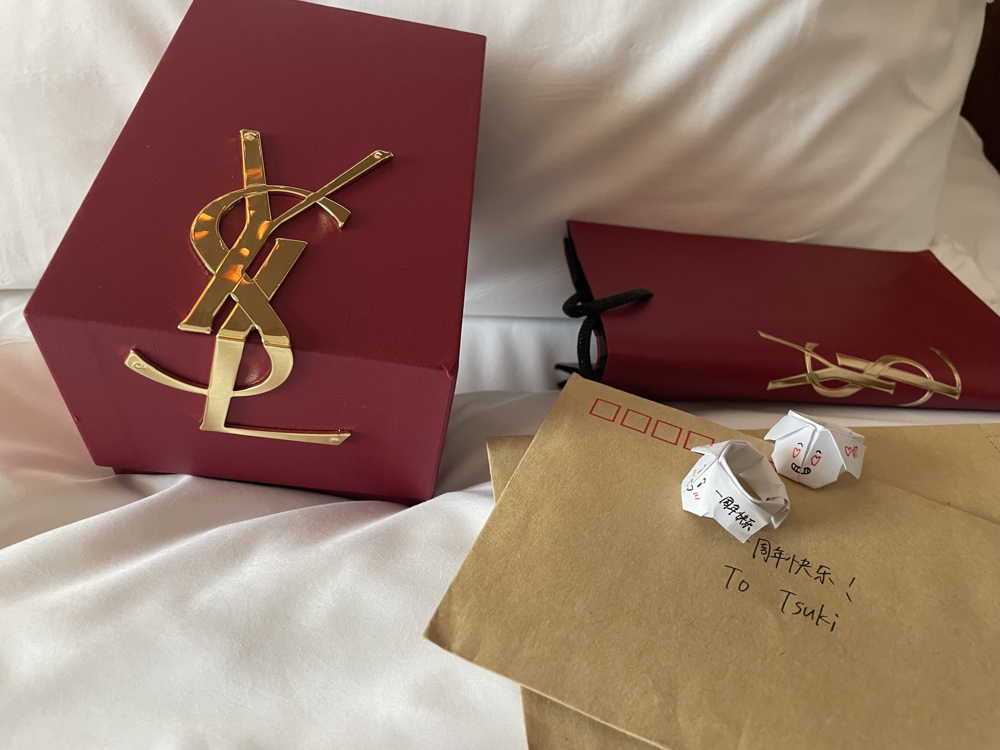
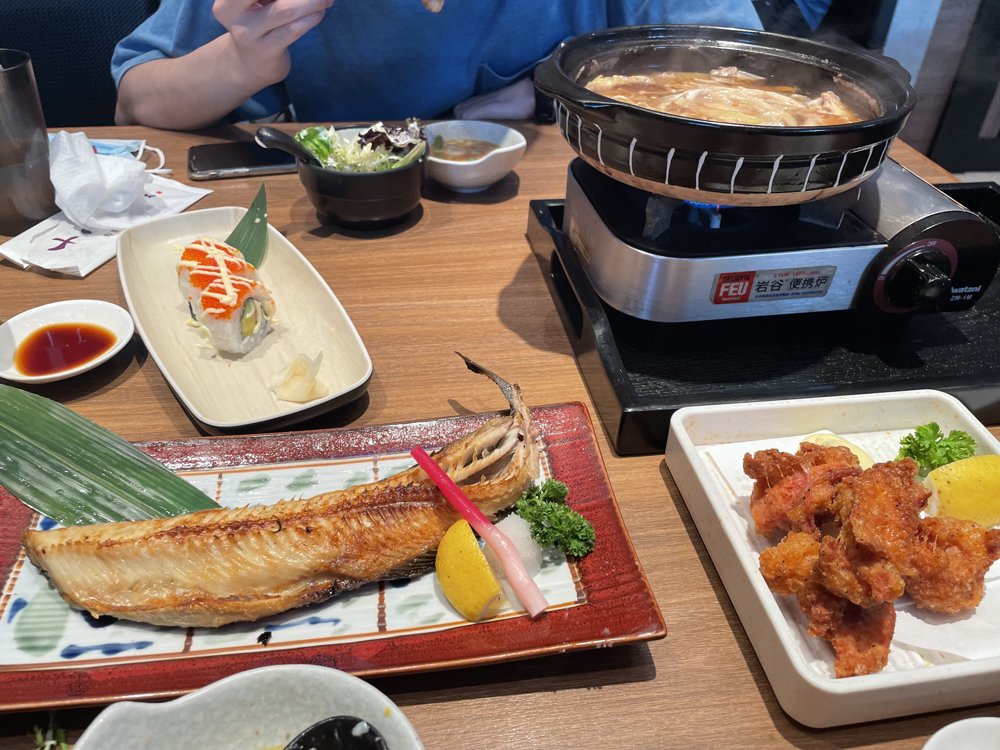
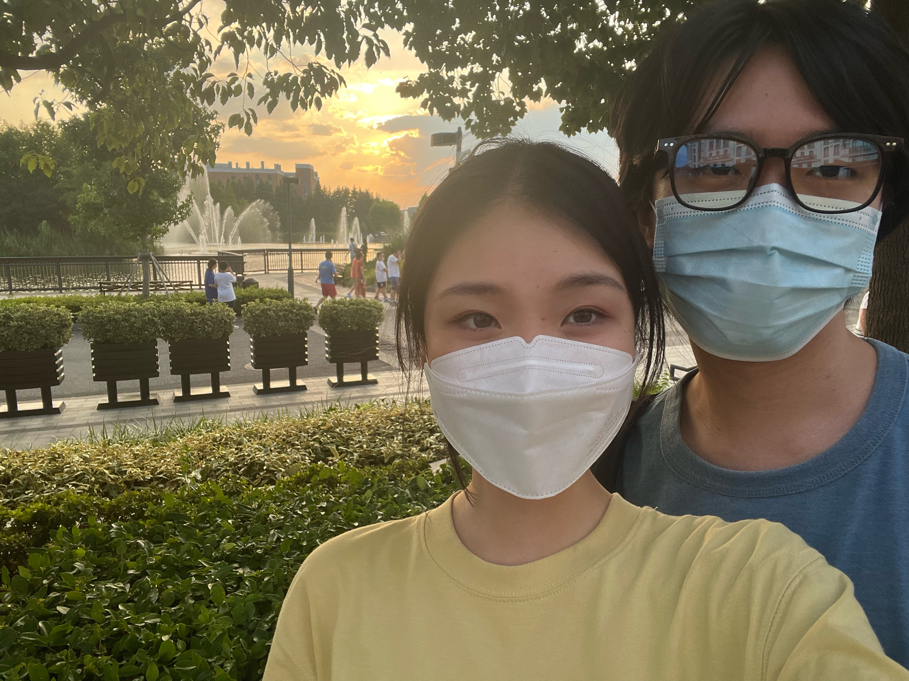
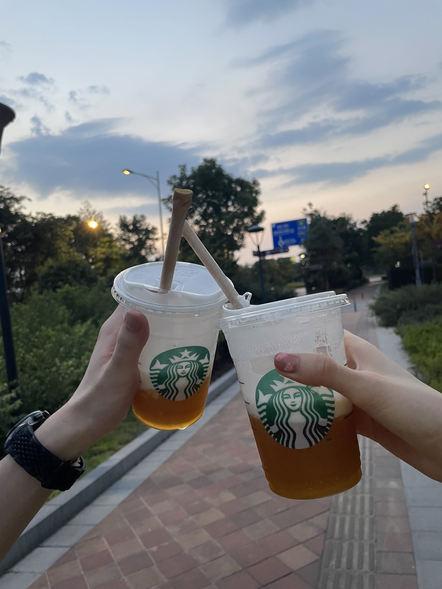
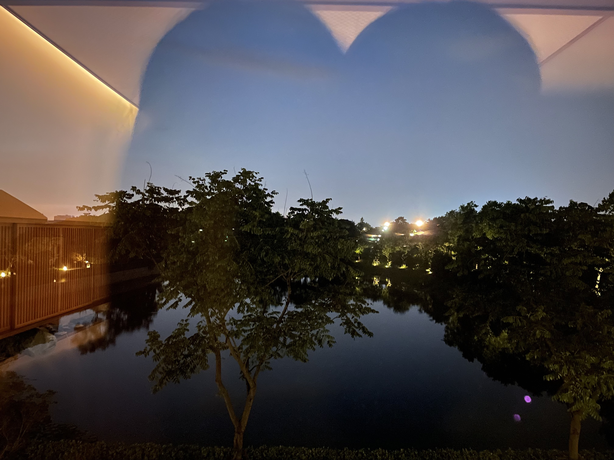
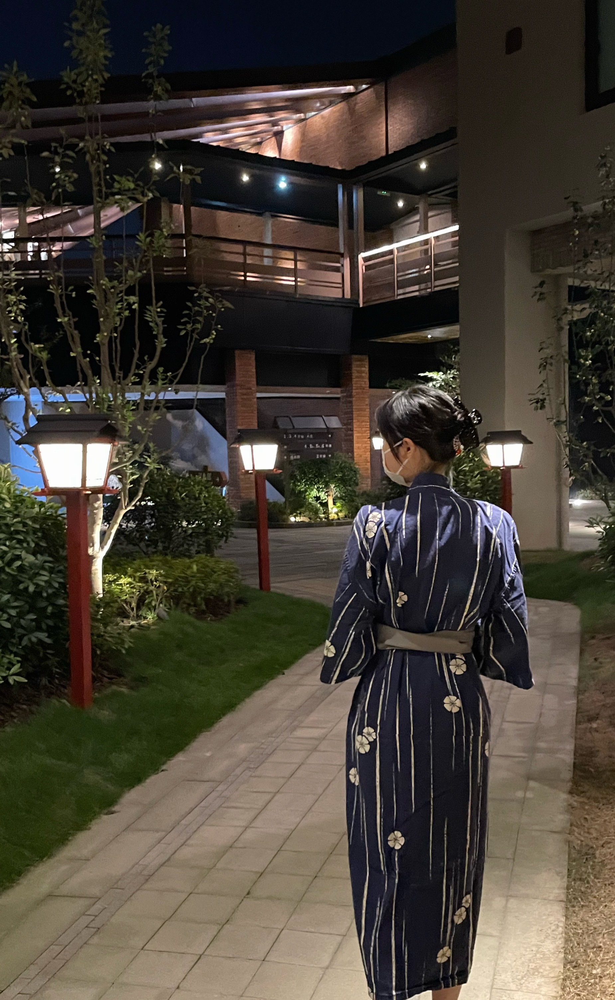
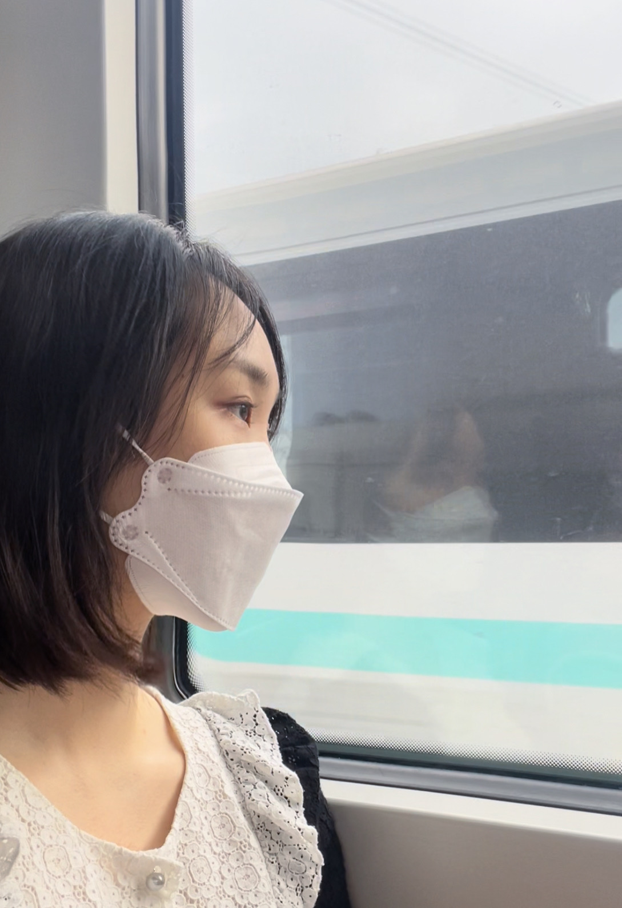
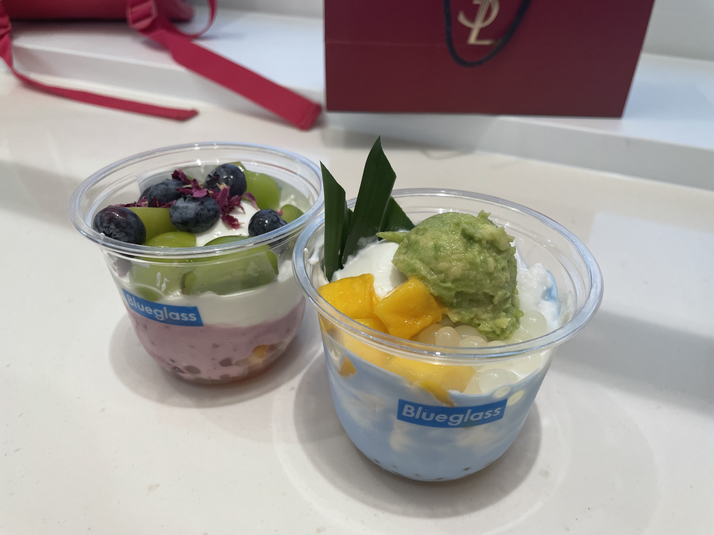

22-08-11
虽然我更擅长运用直觉和概念，接下来，让我来试着凭借记忆和感觉来描述吧。我的目标是记下更多细节，因为它们对我来说弥足珍贵。
那天早上我起得很早，快速打扮了一下，穿上了那件浅黄的T恤。我非常喜欢那件衣服，柔和又轻盈的颜色，宽大的版型，让人觉得非常有安全感。看到他站在那里，我一如既往有点害羞，蓝色真是与他相称。太阳安然地在天上散发着热辐射，空气里弥漫着百合的香气，那是浓烈得带点诱惑意味的脂粉气。
阳光强烈，虽然很热，但是我执意想要去看鸭鸭。拍游客照这件事不是很有旅行的感觉吗？背着我的双肩包，穿着情侣装，和他一起旅行，还有比这更像是夏天的夏天吗？
中午吃了蓝蛙。非常可爱的桃子三文鱼，爱心形状的慕斯蛋糕，上面撒着玫瑰，有点俗气，但是好甜。“为什么不看我？”我忍不住想问。“为什么看着我就会忍不住笑？”这是我更想问的事情了。但是我发现一件了不起的事情，他擅长做食评，这样的人一定是聪明的好人。关于食物的味道，下次要多问一问他。
然后，逛了一家家居店。二楼有非常大的达菲，楼梯转角处有镜子。他背着我的包的样子非常可爱，买可爱的包果然没错。
然后，坐上公交，就可以去酒店了。旅行的感觉、假日的气息扑面而来，让人觉得十分幸福。人非常少，大堂很漂亮，回廊深深恍如梦境。房间里的音箱不知道怎么玩才好，但是音乐意外地不错。然后，我得到了周年礼物，让我回忆一下当时的想法。好漂亮的红色盒子，金色的字体，不知道为什么卡片上没有字，黑色的拉菲草非常有趣，让我小心地拆开，好漂亮的唇釉，诶上面也没有字，好喜欢，现在就想要试试。还有小狗戒指和信，我舍不得拆开看，回家慢慢看好了。如果一天读一段的话，我就可以开心好几天吧！
然后，穿过酒店对面的马路，去吃晚饭。旅行的感觉越发加深了。我物色好了一家日料，太阳反射在他的脸上，寿司师傅似乎在笑，或许是因为我在笑的缘故？他把涮好的肉放在我的盘子里，真开心，这让我想起来和他一起吃烧烤的事了。我似乎总是在笑，一定是因为和他在一起吃饭很开心——或许这就是我忍不住想要问问他为什么不看我的原因也说不定。
吃完饭，去逛了斯凯奇，买了很甜很甜的百香果桃桃茶云乌龙。慢慢地，走到罗森买水去。川沙很开阔，天的颜色很美，重要的是有人牵着我的手——请不要放开我的手喔，我需要的仅此而已。我们买了3*1.5L的水，我真的很需要水，还好他力气比较大，不然我就没有水喝啦。这件事每每想起都让我非常心动，这让我更喜欢他了，真喜欢他呀。
回到房间，我换上了浴衣。蓝色的花花图案，我不太擅长打结，所以随便打个蝴蝶结。穿过庭院，摸黑走到温泉馆，门口有七彩兔子，又奇怪又可爱，放在家里一定是极好的。我觉得他似乎有点着急洗澡（存疑），但是我打算磨磨唧唧地踩点，跑到室外去看烟花。风在吹，我独自泡在池子里，又倚在栏杆上把自己吹干，非常愉快。边上的一家人在和对面的男汤大声对话，除此之外都很完美。池水的声音和烟花的声音，哪一个比较响呢？
吹头发的时候，边上的一对日本母女让我有点在意，限于篇幅先按下不表。然后我取出牛奶，又磨磨唧唧地走回去。我在路上，颇有些流连忘返的心情了，虽然有点怕迷路。庭院楼阁，这种回廊非常吸引我，我真的非常非常喜欢这样的建筑。
开心游园之后，我回到房间，他抱住了我。我忽然觉得，眼前的拥抱比再深的院落都更值得探寻。我是一个非常喜欢独处的人，但是他成为了例外，我忍不住想他，也忍不住在见到他的时候展露笑容。他看了我的信？由于太过害羞，我打算假装没听到这件事。然后，我看了我们的网站，比我想象中还要可爱一百倍！好喜欢！特别是这个logo和名字！那串代码长得实在太过性感，让我不得不被诱惑。这不带工业成分的、完美的甜，让我不得不沉迷其中了。所谓的恋爱对我来说意味着什么呢？意味着父权制和资本主义似乎都不足以再困扰我。我曾经用手紧紧抓住不放的idea，此刻妥帖地浸润了我的心。我感受到弱点的可爱，短暂的隽永，还有生而为凡人的无上光荣。
这似乎脱离了本文的指导思想，还是回到记叙。早上，我似乎听到了一声“宝贝”，然后，感觉有人轻轻触碰了我。我有点困，不太明白发生了什么，刷完牙之后依旧如此，一直到晚上都是。困到模糊，但是我心情很好。
我非常喜欢那天的早饭。有很多很多的三文鱼，还有咖喱饭，寿司，完美符合我的喜好。纳豆原来是带点咖啡味的，绿色的大福和黄色的小慕斯都好好看，我很感谢他帮我尝尝。还掌握了新知识：乌龙茶的底下会很苦，牛奶和菠萝原来真的不适合同食。这个时候我还是有点困，心情是喜欢小王。
然后中午，去了Costa。喝了黄黄绿绿的茶，上面有奶泡，不太甜，喜欢。我看了足球运动员，还有综艺。他又睡着了，真是没有警惕心，太可爱了。我给他画了妆，真心地说，我觉得很漂亮，因为他的长相是带着一点妩媚的。然后我们决定去世纪大道，买了一瓶水，在地铁上他给我拍了照——16号线太适合拍照了，特别是这个发型拍照。夕阳顾我，落在我的身上，让我觉得自己十分幸运。
在世纪大道和世纪汇之间跑来跑去，吃了点都德，以及酸奶。在迪士尼小镇也吃了酸奶喔，上面有“绿绿的纸”，嘿嘿。在GAP逛了一圈，他在开组会，我在H&M看到了一件好看的西装，后来还是把它买下来了，我一直想要一件休闲西装。和他一起逛街的时候，我会觉得非常不可思议，因为我从前一点也不喜欢逛街。这也是小王的魔法吗？开心的心情，似乎就在和他一起的情况下，被源源不断地变出来了，这让我对于做人不是一件难事充满了信心。
为了不忘记，我快速地、一气呵成地、尽可能原汁原味而不过分加以修饰地把这些全部记下来，希望能够保留那两天的原貌。
这是不可思议的两天，不可思议的一年不是吗？我愿称之为奇迹存在的证据。他也会这样想吗？我十分希望确实如此。能被他的“宝贝”叫醒，这是我做梦也不敢幻想的场景，或许我至今仍在做梦也说不定？又或许这一年，我已经生活在另一个宇宙里了！
挑选花花

男主出现
被狗仔偷拍
和鸭鸭的合影
唇釉、信和小狗戒指
日料店，好吃
看看夕阳吧～
星巴克二人组
酒店窗外的湖
美女的背影
美女的侧颜
蓝玻璃